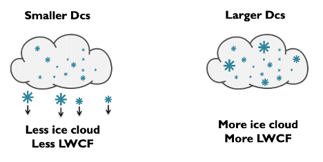
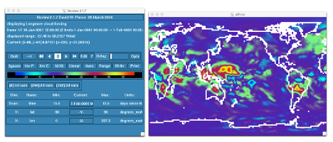

Change a tuning parameter in CAM
Change a tuning parameter in CAM#
In the tuning lecture, we talked about the parameter dcs: http://www.cesm.ucar.edu/events/tutorials/2019/files/Specialized-hannay.pdf
Create a case called b1850_dcs using the compset B1850 at f19_g17 resolution.
Locate where to change the parameter Dcs and change from the default value:
dcs = 200.D-6
to
dcs = 500.D-6
Make a 1-month run.
Click here for hints
The trick is going to locate where to change
dcsCompare to this run to the first run you did today:
b1850_high_freq.You can use
ncdiffandncviewto look at the difference between the 2 runs. For instance:
ncdiff /glade/scratch/$user/archive/b1850_dcs/atm/hist/b1850_dcs.cam.h0.0001-01.nc /glade/scratch/$user/archive/b1850_high_freq/atm/hist/b1850_high_freq.cam.h0.0001-01.nc diff.nc
ncview diff.nc
Analyze how this does this affect the
LWCF?
Click here for the solution
# Create a new case
Create a new case b1850_dcswith the command:
cd /glade/work/$USER/code/my_cesm_code/cime/scripts/
./create_newcase --case ~/cases/b1850_dcs --compset B1850 --res f19_g17
# Setup
Invoke case.setup with the command:
cd ~/cases/b1850_dcs
./case.setup
# Customize namelists
Locate the variable to modify dcs. (Locating variables requires a learning curve. A good place to start is to look at the Variable namelist documentation.
The variable is: micro_mg_dcs.
By default this variable is set to:
micro_mg_dcs = 200 microns
You want to set it to:
micro_mg_dcs = 500 microns
Edit the file user_nl_cam and add the lines:
micro_mg_dcs = 500.D-6
# Set run length
Change the run length:
./xmlchange STOP_N=1,STOP_OPTION=nmonths
# Change the job queue and account number
If needed, change job queue and account number.
For instance, to run in the queue regular and the project number P93300642, use the command:
./xmlchange JOB_QUEUE=regular,PROJECT=P93300642
# Build and submit
Build the model and submit your job:
qcmd -- ./case.build
./case.submit
# Look at your solution
When the run is completed, compare this run to the first run:
b1850_high_freq.Create a file with the difference in
LWCFbetweenb1850_dcsandb1850_high_freq.You can use
ncdiffandncviewto look at the difference between the 2 runs.For instance, use
ncdiffto create a file with the difference between the 2 runs:
cd /glade/scratch/$user/archive/b1850_dcs
ncdiff /glade/scratch/$user/archive/b1850_dcs/atm/hist/b1850_dcs.cam.h0.0001-01.nc /glade/scratch/$user/archive/b1850_high_freq/atm/hist/b1850_high_freq.cam.h0.0001-01.nc diff.nc
Use
ncviewto look at the file you created.
ncview diff.nc
#How does this affect the LWCF ?
Dcs = Threshold diameter to convert cloud ice particles to snow

Figure: Representation of Dcs.
We increased Dcs from 200 microns to 500 microns. We should have more ice cloud and the LWCF should be larger.
The field
LWCF difference looks like
Figure: Difference of LWCF for micro_mg_dcs = 200.D-6->500.D-6
We can see that the change in Dcs affects the tropics where LWCF is large. However, 1-month run is too short to look at robust statistics.